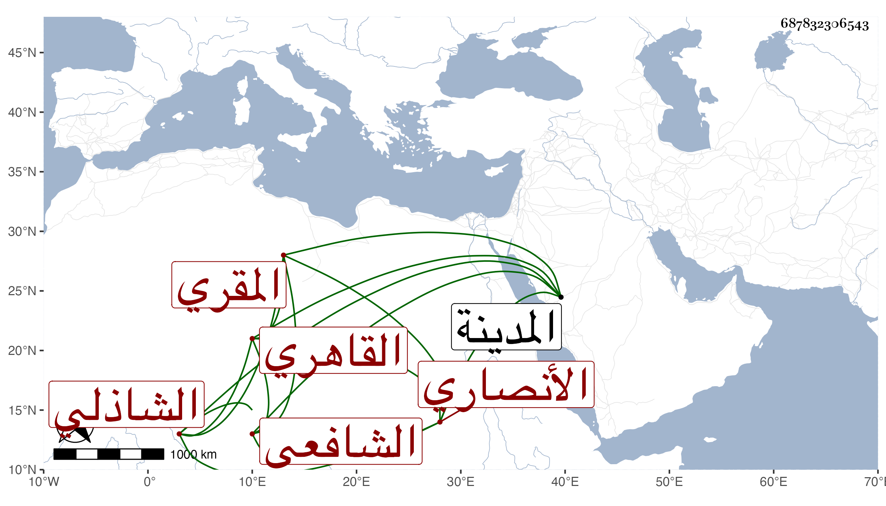

0902Sakhawi.DawLamic.ITO20230111-ara1.EIS1600.687832306543
Biography ID: 687832306543
أحمد بن أبي بكر بن محمد الأنصاري الشافعي الشاذلي المقري القاهري ، ويعرف بأبيه . ولد سنة بضع وستين وثمانمائة تقريبا ونشأ فحفظ القرآن وتلا به إفرادا وجمعا على الزين جعفر وعمر النشار والشمس الحمصاني وحفظ الكثير من الشاطبية والمنهاج واشتغل على جماعة كالكمال بن أبي شريف بل قرأ عليه قطعة من مسند الشافعي وكذا أخذ في الفقه عن النور الأشموني والشمس بن المسد وعنه وعن الشمس العطري وملا علي في العريبة وعن الأخير أخذ في الأصول وحضر عند عبد الحق ويس بل والجوجري وقرأ على الديمي أزيد من نصف البخاري وجميع الأذكار ، وحج غير مرة وجاور وتكسب بإقراء الأطفال وأقام بالمدينة أكثر من نصف شهر ولقيني بها فقرأ علي الثلاثيات والشاطبية وغيرهما وهو له قابلية وتوجه .
